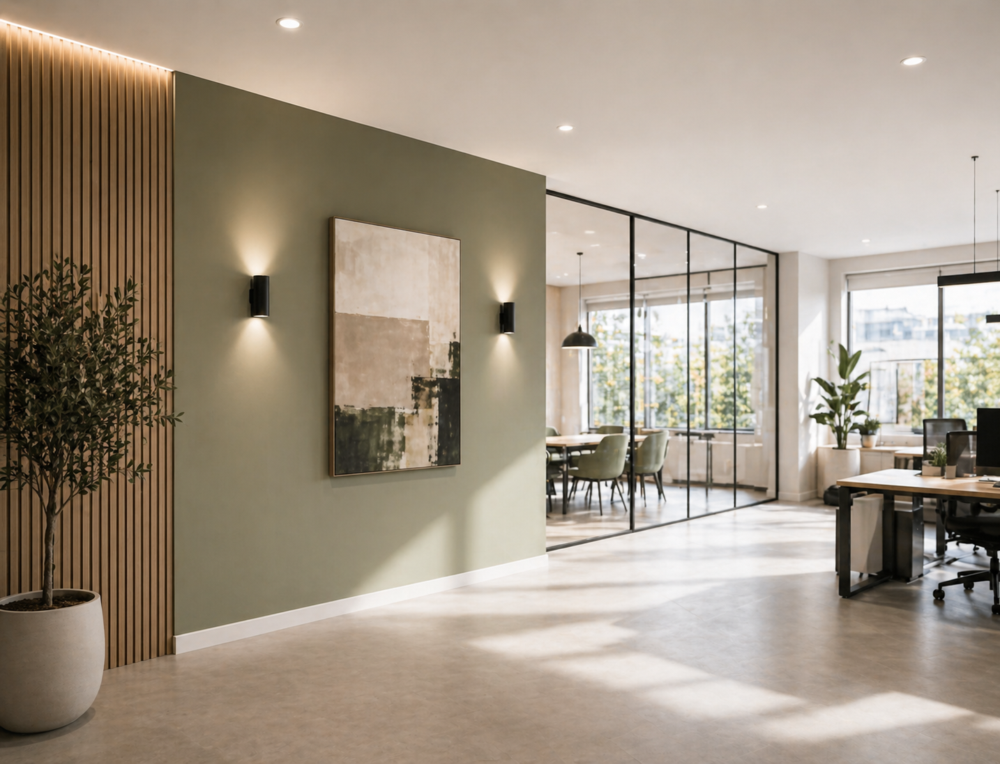

Jede Fläche.
Eine Möglichkeit.
Von der einzelnen Wand bis zur kompletten Modernisierung: Wir beraten persönlich, planen sorgfältig und setzen fachgerecht um.
01 /Innenanstrich
Frische Farben für Wohnräume, Büros und Praxen. Wir stimmen Farbton, Material und Belastbarkeit auf Licht und Nutzung ab. Für ruhige Oberflächen und gleichmäßige Ergebnisse.
- Wände und Decken
- Schutz von Böden und Einrichtung
- Sorgfältige Untergrundvorbereitung
02 /Fassadenanstrich
Schutz und neue Außenwirkung für Ihr Gebäude. Nach einer Prüfung des Untergrunds wählen wir passende Materialien und stimmen das Farbsystem auf Ihre Fassade ab.
- Untergrundprüfung
- Wetterfeste Beschichtungen
- Abgestimmtes Farbkonzept
03 /Lackierarbeiten
Details machen den Unterschied. Wir schleifen, grundieren und lackieren Türen, Rahmen, Möbelteile, Geländer und Holzflächen – für robuste Oberflächen mit sauberen Kanten.
- Türen und Rahmen
- Geländer und Holzflächen
- Schleifen, Grundieren und Lackieren
04 /Tapezierarbeiten
Ob ruhiges Vlies, Muster oder Akzentwand: Wir sorgen für passende Untergründe, saubere Anschlüsse und ein stimmiges Gesamtbild.
- Vliestapeten und Muster
- Akzentwände
- Präzise Übergänge
05 /Spachteltechniken
Glatte Wände, feine Strukturen und moderne Akzentflächen. Sorgfältige Spachtelarbeiten schaffen die Grundlage für hochwertige Oberflächen mit Tiefe und besonderer Haptik.
- Glatte Wandflächen
- Feine Oberflächenstrukturen
- Gestaltungsflächen und Akzente
06 /Schimmelbeseitigung
Wir prüfen betroffene Flächen, übernehmen die Entfernung und stimmen die anschließende Beschichtung ab. Dabei beraten wir auch zu Ursachen und Vorbeugung.
- Analyse der betroffenen Flächen
- Entfernung und Beschichtung
- Beratung zur Vorbeugung
07 /Renovierung
Einzelne Räume, ganze Wohnungen oder gewerbliche Flächen: Wir planen die Malerarbeiten mit Ihnen und stimmen die Schritte transparent auf Nutzung und Terminfenster ab.
- Einzug und Auszug
- Modernisierung und Umbau
- Wohnungen und Gewerbeflächen
08 /Farbberatung
Ein stimmiges Farbkonzept passt zum Raum und zu den Menschen darin. Wir beraten zu Farbwirkung, Glanzgrad, Material und Nutzung, damit Sie sicher entscheiden können.
- Farbkonzepte für Privat und Gewerbe
- Licht, Material und Raumwirkung
- Passende Farbtöne und Glanzgrade
Ihr Alltag gibt
den Rahmen vor.
Wohnung, Einfamilienhaus, Praxis oder Ladenfläche: Wir stimmen Planung und Ausführung auf die Nutzung und Ihre Zeitfenster ab. So behalten Sie den Überblick.
Ihr Vorhaben besprechen
Welche Fläche
darf sich verändern?
Erzählen Sie uns von Ihrem Vorhaben. Wir beraten Sie persönlich, kostenlos und unverbindlich.